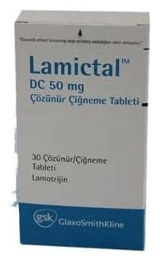

Lamictal DC 50 mg Cozunur/Çiğneme Tableti, 30 Adet

Ne için kullanılır
KT · Bölüm 1LAMICTAL sara/epilepsi nöbetini önleyici ilaçlar adı verilen ilaç grubunun bir üyesidir. Herbir yüzü beyaz-beyazımsı, kuş üzümü kokulu, çentiksiz, yuvarlak hafif köşeli tabletlerin bir tarafında “GSCX7” baskısı diğer tarafında “50” yazısı vardır. Tabletler hafif benekli olabilir. Her kutuda çocuk korumalı blisterler içerisinde 30 tablet bulunmaktadır.
LAMICTAL aşağıdaki durumlarda kullanılır: • 2-12 yaş arasındaki çocuklarda sara hastalığının tedavisinde, kısmi nöbetlerde ve tonik- klonik nöbetleri (kasılma ve sarsılma ile giden nöbetler) ve Lennox-Gastaut Sendromu (farklı nöbet tiplerinin izlendiği özel bir sara hastalığı tablosu) ile ilişkili nöbetleri de içeren yaygın nöbetlerde diğer ilaçlarla birlikte kullanılır. Hastanın nöbetleri kontrol altına alındıktan sonra tek olarak devam edilebilir. • 2-12 yaş arasındaki çocuklarda tipik absans nöbeti (ani başlangıç ve bitişli simetrik nöbet) adı verilen sara tipinin tedavisinde tek başına kullanılır. • 12 yaş üzeri çocuklarda ve yetişkinlerde sara hastalığının tedavisinde, kısmi nöbetlerde ve tonik-klonik nöbetleri ve Lennox-Gastaut Sendromu ile ilişkili nöbetleri de içeren yaygın nöbetlerde diğer ilaçlarla birlikte olarak veya tek başına kullanılır. • 18 yaş ve üzeri yetişkinlerde bipolar bozukluk (iki uçlu duygudurum bozukluğu) tedavisinde kullanılır. Bu ilacı kullanmaya başlamadan önce bu KULLANMA TALİMATINI dikkatlice okuyunuz, çünkü sizin için önemli bilgiler içermekt edir. • Bu kullanma talimatını saklayınız. Daha sonra tekrar okumaya ihtiyaç duyabilirsiniz. • Eğer ilave sorularınız olursa, lütfen doktorunuza veya eczacınıza danışınız. • Bu ilaç kişisel olarak sizin için reçete edilmiştir, başkalarına vermeyiniz. • Bu ilacın kullanımı sırasında, doktora veya hastaneye gittiğinizde bu ilacı kullandığınızı doktorunuza söyleyiniz. • Bu talimatta yazılanlara aynen uyunuz. İlaç hakkında size önerilen dozun dışında yüksek veya düşük doz kullanmayınız.